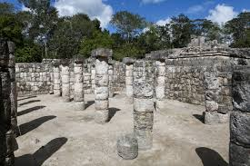
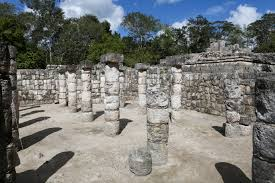

Chichén Itzá fue fundada hacia el año 250 d. C., durante «la primera bajada
o bajada pequeña del oriente» que refieren las crónicas, por los chanes de Bacalar
(que después se llamaron itzá y más tarde cocomes).
Habiendo establecido los chanes la capital de su gobierno en Chichén Itzá en la época
señalada, provenientes de Bacalar, continuaron su trayecto de oriente a poniente en
la península de Yucatán, al cabo del cual fundarían también otras ciudades importantes
como Ek Balam, Izamal, Motul, TꞌHó, la actual Mérida de Yucatán, y Champotón.
Ya hacia el final del período clásico tardío, Chichén se convirtió en uno de los más
importantes centros políticos de las tierras del Mayab. Para el principio del posclásico
(desde el año 900 hasta el 1500), la ciudad se había consolidado como principal centro de
poder en la península yucateca.
.jpeg) 

Fue inscrita como Patrimonio de la Humanidad por la Unesco en 1988.3 El 7 de julio de 2007,
el Templo de Kukulcán, ubicado en Chichén Itzá, fue reconocido como una de las nuevas siete
maravillas del mundo moderno, por una iniciativa privada sin el apoyo de la Unesco, pero con
el reconocimiento de millones de votantes alrededor del mundo.4 La arquitectura monumental
que ha llegado hasta nuestros días, que es emblemática del yacimiento, tiene una clara
influencia tolteca. El dios que preside el sitio, según la mitología maya, es Kukulcán,
representación maya de Quetzalcóatl, dios tomado del panteón de la cultura tolteca.